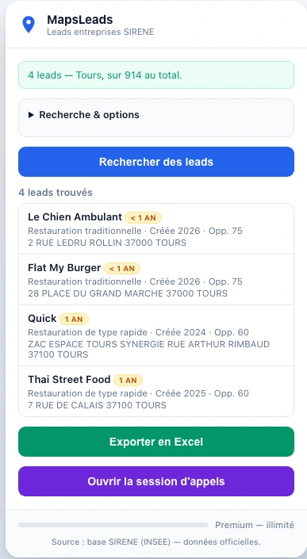

Extension Chrome
Votre prochain
client est
tout près.
Un métier, une ville. MapsLeads trouve les entreprises qui y exercent et les réunit dans votre liste de prospection.
Ajouter à ChromeVersion gratuite sans compteDu métier recherché
à la liste de prospects.
Découvrez comment MapsLeads accompagne chaque étape de votre prospection.

Questions
fréquentes.
D’où viennent les entreprises affichées ?
MapsLeads consulte le répertoire SIRENE de l’INSEE via l’API Recherche d’entreprises. Vous pouvez cibler une commune française, un code postal ou un département.
Qu’est-ce qui est inclus gratuitement ?
Vous pouvez effectuer autant de recherches que vous le souhaitez, sans créer de compte. La version gratuite comprend trois exports Excel de vingt lignes maximum chacun.
Quelles coordonnées peut-on exporter ?
Le fichier contient l’adresse postale et les informations administratives de chaque établissement. Pour contacter l’entreprise, vous devrez compléter vous-même son téléphone ou son adresse e-mail.
Où sont conservés mes notes et mes suivis ?
Les résultats, les statuts d’appel et les notes sont enregistrés dans le stockage local de votre navigateur.
Par où commence
votre prospection ?
Choisissez votre premier métier et votre première ville dans MapsLeads.